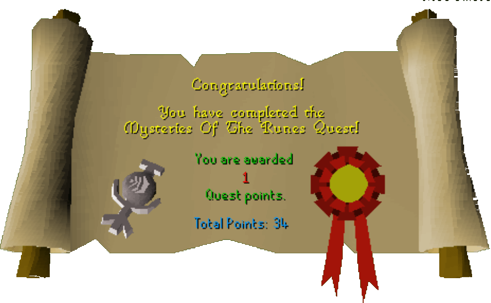

Rune Mysteries Quest
Description: Recent research at the Wizards Tower has found a way to create Runes for the first time in centuries. Assist the head wizard Sedridor in his research and he too may teach you these secrets!Difficulty: Novice
Length: Short
Items & Skills Needed:
- None
Recommended:
Reward: 1 Quest point, free teleport to the Rune Essence Mine by speaking to either Aubury or Sedridor
Instructions:
To start the quest, speak to Duke Horacio, who is located on the 2nd floor of Lumbridge Castle.
He'll ask you to deliver a rare air talisman to the Head Wizard, who is located in the basement of the Wizard Tower.
He will give you an item that you must take to the rune shop seller in Varrock. He is located in southeast Varrock, behind the bank.
The rune seller, Aubury, will give you some findings to take back to the Head Wizard. Return to him once more.
Congratulations — you have completed the first RS2-introduced quest!
Congratulations, Quest Complete!

This quest guide was written on RuneHQ by evadek. Thanks to Monkeychris, Rebelbeta, Sharker998, Archangel Malachi, Neek, Tomk4k, Therichsweede, and Poison for corrections.
This quest guide was entered into the database on Mon, Dec 01, 2003, at 06:12:25 PM by MrStormy and was last updated on Wed, Mar 31, 2004, at 05:01:06 PM.